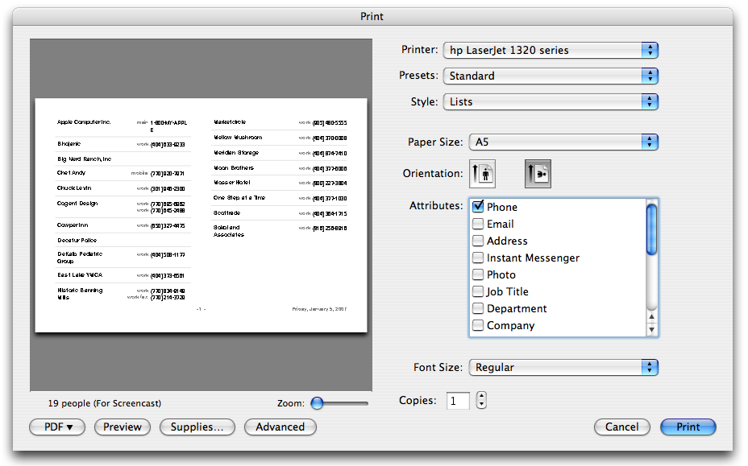
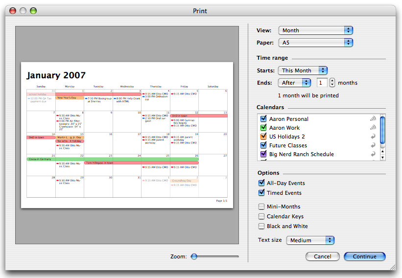
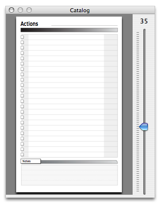
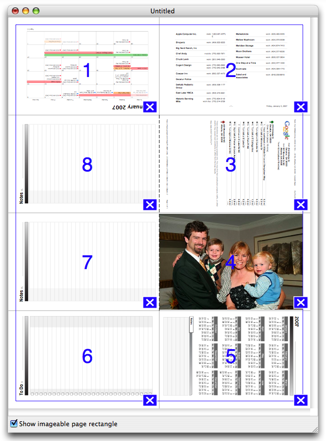
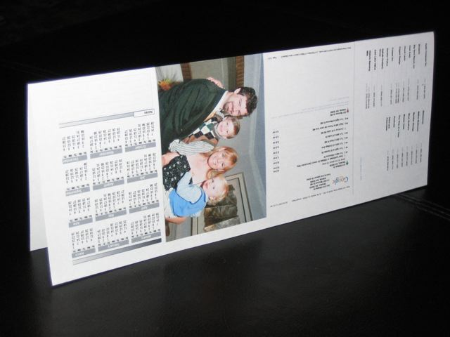
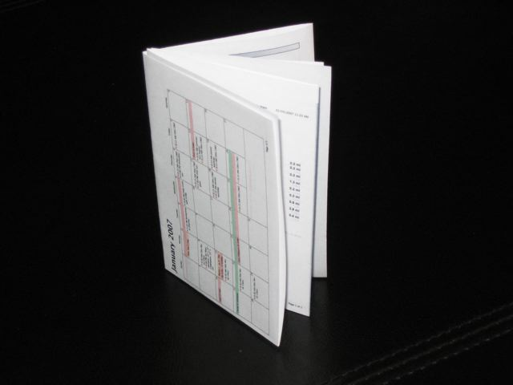

This program is a Cocoa implementation of Chad Adam's PocketMod Flash application. You can use that program at http://www.pocketmod.com/.
The D*I*Y Planner forms are released by Douglas Johnston under a Creative Commons Attribution Non-Commercial No-Derivatives license, which means that they are free for personal and non-commercial use. Use within a business setting is fine as long as they are not mass-produced (i.e., in numbers greater than 50). "Getting Things Done" and its related concepts are copyright David Allen, All Rights Reserved.
I have time to do stuff like this because I work for Big Nerd Ranch, Inc. Big Nerd Ranch, Inc. does training, consulting, and books on topics like Cocoa Programming, PostgreSQL, OpenGL, Ruby on Rails, Python, Django, PHP, and Asterisk. Come to class. Rent a nerd. Buy a book.
The rest of this document is devoted to how to use PagePacker to create a tiny eight-page book out of a standard 8.5" x 11" (or A4) piece of paper.
Step 1: Generate PDFs of stuff you want from your data
Here are my recipes, but you may get better results some other way.
To get your phone numbers from Address Book:
Choose a group of a reasonable size (You will get about 20 names/phone numbers per page if you follow these directions), and select the Print menu item. Make the print panel look like this:
That is: List style, A5, Landscape, just phone, Regular font.
Instead of clicking print, use the PDF pop up to create a PDF.
To get your calendar from iCal:
Choose the print menu item. Make the Print panel look like this:
That is, put it on A5 paper and get rid of the stuff you don't need. I use medium size text.
Click "Continue" and save it as a PDF.
To print a PDF of directions from GoogleMaps, MapQuest, YahooMaps, etc. (Or any other web page)
Get to the directions, and choose the Page Setup... menu item. Pretend that you are going to be printing onto A5 paper:

Now, click the "Print" or "Printable Version" link which will get you a nice simple view of the directions. The print panel may automatically appear. If it doesn't, use the Print.. menu item to get the print panel to appear. Once again, use the PDF popup to save the directions to a PDF.
Step 2: Add your pages to the book
Start PagePacker drop any sort of PDF or image file on the page where you want it to appear. (It will also take plain text files.)
Drag from the catalog window to add standard, static pages to the book.
When you have eight pages in the book all the rectangles will be full:
To move a page, just drag it to the desired space. To duplicate a page, option-drag it.
Step 3: Print it.
Use the "Print..." menu item and print the page on an 8.5" x 11" (or A4) piece of paper. With such small print, the more DPI you can get, the better the text will look.
Step 4: Fold the paper lengthwise along the line
The inky parts should be on the outside:
Step 5: Unfold it. In the other direction, fold it on the three lines like a fan
The inky parts end up inside the fan:

Step 6: Open the outer two flaps of the fan, and cut along the black line

Step 7: Fold the first fold again
With the outer flaps open and the inner flap cut, you can now refold the paper lengthwise.

Final: Put the front cover in front and the back in back.
Voila! A little book!
AppleScript
PagePacker is fully AppleScriptable. The AppleScript dictionary is self-documenting, so you can look there for more information.
Here is a sample script that assumes that you have a test.pdf file on your desktop:
set f to (path to desktop as string) & "test.pdf" tell application "PagePacker" set page size to letter make new document tell document 1 set catalog source page of page 1 to 27 set file source of page 2 to alias f clear page 1 set myPage to page 3 tell myPage set catalog source page to 30 end tell end tell end tell
Paper
PagePacker supports both 8.5" x 11" and A4 paper. Go to the preferences to set your preferred paper size
License
PagePacker and its source code are released under the BSD License.